Taylor and Laurent series in Maple
The series command in Maple is capable of generating all kinds of Laurent series, though sometimes a little "trickeration" is in order.
If you ask for an expansion at a point of analyticity, you get a Taylor series.
| > | series( sin(z), z=Pi/2, 8); |
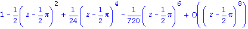
| > | series( 1/(1-z), z=0, 6); |
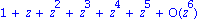
| > | series( log(z), z=I, 6); |
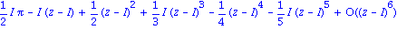
You get no information about the disk of convergence for these series. That's always determined by the nearest singularity. For example,
| > | S:= unapply( convert( series(tan(z),z=0,32), polynom), z); |
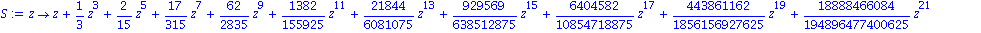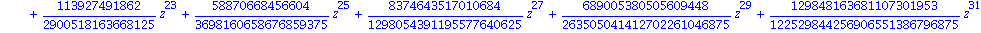
| > | plot( [Im(S(I*y)),Im(tan(I*y))], y=-1.7..1.7 ); |
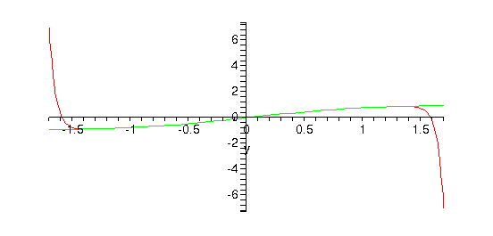
Maple will produce certain Laurent series without any special effort. For instance, cot(z) is not analytic at z=0, but can be expanded there.
| > | series( cot(z), z=0, 6 ); |
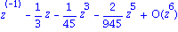
This series is valid only in the annulus 0<|z|<Pi.
| > | S:= unapply( convert(series(cot(z),z=0,24),polynom), z); |
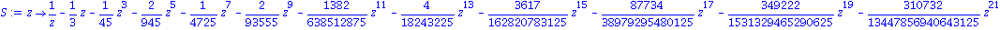
| > | plot( [Im(S(I*y)),Im(cot(I*y))], y=0.1..3.5 ); |
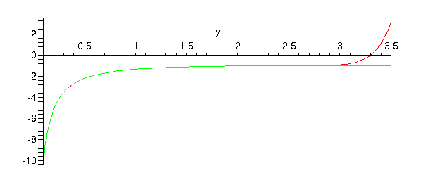
Here is a useful case study of a function with two singularities.
| > | f:= z->1/((z-1)*(z-2)); |
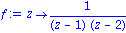
We have a Taylor series valid for |z|<1:
| > | S1:= unapply( convert( series(f(z),z=0,24), polynom ), z); |
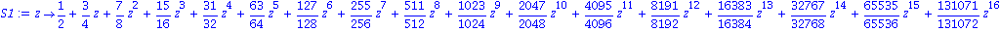
The function is also analytic in the annulus |z|>2. One way to think of this is to let w=1/z and find a Taylor series at w=0 (valid for |w|<1/2):
| > | subs( w=1/z, series( f(1/w), w=0, 8) ); |
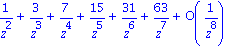
The usual shorthand for this is to say that the series is expanded at z=infinity.
| > | S2:= unapply( convert( series(f(z),z=infinity,24), polynom ), z); |
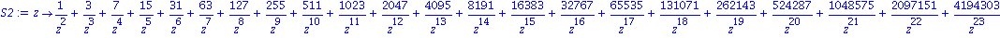
To get a series in the remaining annulus 1<|z|<2, we have to be sneaky. First, separate the singularities into two pieces.
| > | convert( f(z), parfrac ); |

Now, 1/(z-2) is analytic for |z|<2, so we can expand at zero.
| > | S31:= convert( series(1/(z-2),z=0,40), polynom ) |
Warning, inserted missing semicolon at end of statement, ...0), polynom );
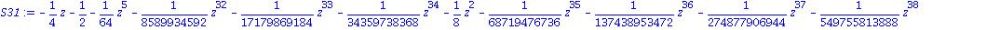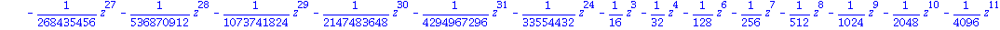
And 1/(z-1) is analytic for |z|>1, so we can expand at infinity.
| > | S32:= convert( series(1/(z-1),z=infinity,40), polynom ) |
Warning, inserted missing semicolon at end of statement, ...0), polynom );
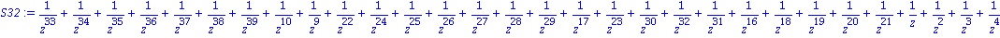
The combination of the two is valid in the intersection, 1<|z|<2.
| > | S3:= unapply( S31-S32, z): |
Here we validate the convergence properties along the negative real axis.
| > | plot( [f(x),S1(x),S2(x),S3(x)], x=-4..0, f=0..0.6, numpoints=200 ); |
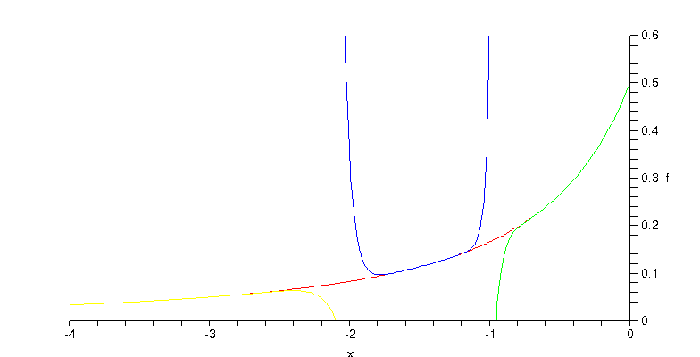
If instead we expand at z=2, we have two annuli, 0<|z-2|<1 and |z-2|>1. The first is an ordinary Taylor expansion. The second is done quickly using variable substitution again:
| > | subs( w=z-2, series( f(w+2), w=infinity, 6 ) ); |
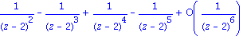
| > |